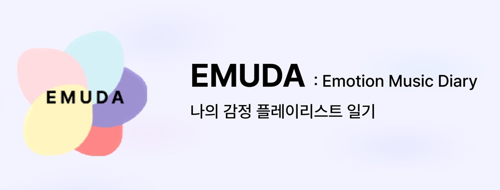
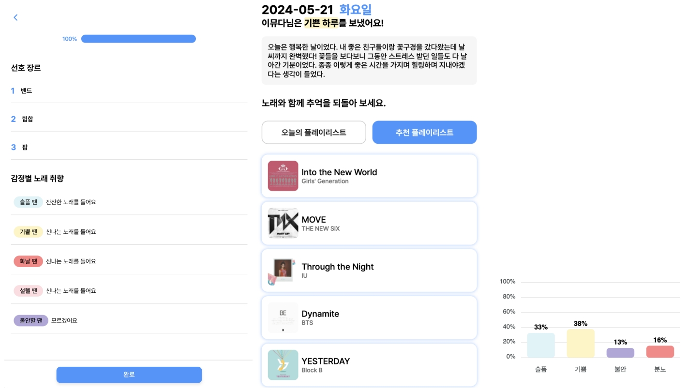
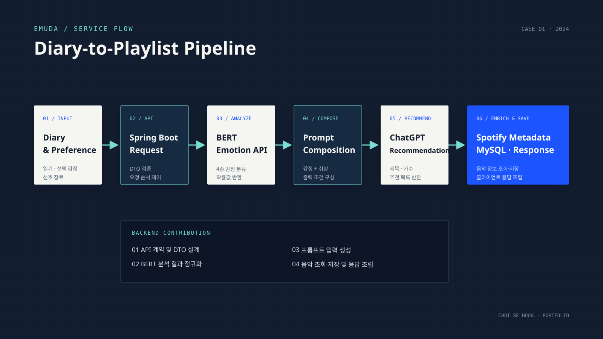
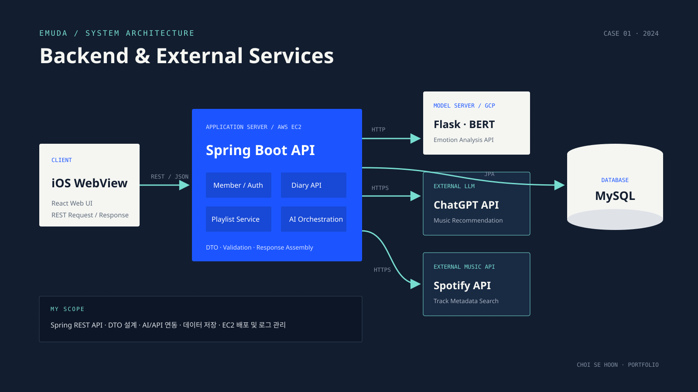
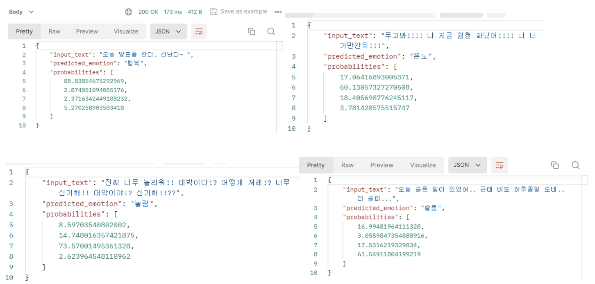
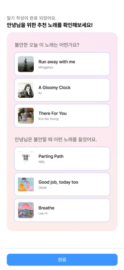

REST API 설계
Spring Boot 기반 회원, 일기, 플레이리스트 API 구현. iOS 클라이언트 연동을 위한 DTO 및 응답 구조 표준화.
Emotion Music Diary
감정 일기 분석 결과와 사용자 음악 취향을 결합한 개인 맞춤형 플레이리스트 추천 서비스

00 / OVERVIEW
Spring Boot 기반 REST API 개발과 데이터 구조 설계 담당. BERT 감정 분석 결과, 사용자 음악 취향, ChatGPT 추천 결과와 Spotify 음악 정보를 연결하는 백엔드 서비스 파이프라인 구축.
HOW IT WORKS
사용자가 일기를 작성하고 현재 감정을 직접 선택합니다.
BERT 서버가 행복·분노·놀람·슬픔의 확률과 핵심 키워드를 반환합니다.
상위 감정 2개와 선택 감정, 일기 내용, 장르 및 감정별 음악 취향을 결합합니다.
ChatGPT가 입력된 감정과 취향을 바탕으로 곡 제목과 아티스트를 제안합니다.
Spotify API에서 추천 후보를 검색하고 서비스에 필요한 음악 정보를 조회합니다.
검색한 곡을 MySQL에 저장하고 사용자 플레이리스트로 반환합니다.
01 / PRODUCT
일기 작성, 감정별 분석 결과 확인, 사용자 취향 및 감정 기반 플레이리스트 추천으로 이어지는 서비스 기능 구성.

02 / CONTRIBUTION
백엔드 API 개발 및 외부 AI·음악 서비스 연동 담당.
Spring Boot 기반 회원, 일기, 플레이리스트 API 구현. iOS 클라이언트 연동을 위한 DTO 및 응답 구조 표준화.
BERT 감정 분석 결과를 ChatGPT 음악 추천 입력으로 전달하고, Spotify 음악 정보 조회 및 저장 과정과 연결.
감정·취향 정보 전달 방식과 추천 조건을 팀 공동으로 설계. 곡 제목과 아티스트를 서버에서 처리 가능한 형태로 반환하도록 프롬프트 조정.
AWS EC2 환경에 Spring 애플리케이션 배포. 환경 변수, 네트워크 포트 및 애플리케이션 로그 관리.
TECHNICAL DECISIONS
DECISION / 01
DECISION / 02
DECISION / 03
03 / SERVICE FLOW
일기 입력과 감정 분석부터 추천 후보 생성, Spotify 곡 조회 및 저장까지 이어지는 전체 처리 과정.

04 / ARCHITECTURE
클라이언트, Spring 서버, AI 모델 서버, 외부 API와 데이터베이스의 구성.

05 / RESULTS
감정 분류 및 음악 추천 구현 결과와 기술적 한계.

RESULT / 01
한국어 일기 텍스트를 행복·분노·놀람·슬픔으로 분류하고 감정별 확률 반환. 하나의 문장에 여러 감정이 섞여 있어도 네 개 감정 범주로 단순화해야 하는 표현상의 한계 확인.
PROBABILITY ORDER[행복, 분노, 놀람, 슬픔]

RESULT / 02
BERT가 분석한 상위 감정과 사용자 선택 감정, 장르 및 감정별 음악 취향을 조합해 추천 후보 생성. Spotify API에서 실제 곡을 조회하고 플레이리스트로 제공하는 기능 구현.
06 / REVIEW
사전에 구축된 BERT 감정 분석 서버와 ChatGPT API를 Backend에서 연결한 초기 단계의 AI 활용 프로젝트다. 직접 모델을 학습하거나 정량적으로 평가하지 않았으며, 복합적인 감정을 네 개 범주로 단순화한 결과가 음악 추천 전체에 영향을 주는 한계가 있었다. 또한 Prompt로 응답 형식을 제한했기 때문에 형식 안정성을 서버에서 보장하지 못했고, BERT·ChatGPT·Spotify의 순차 호출은 지연과 장애 지점을 늘렸다.
첫 팀 프로젝트에서 분석 모델의 출력을 단순히 화면에 표시하는 데 그치지 않고, 감정 점수와 사용자 취향을 다음 API의 입력으로 변환해 최종 추천 결과까지 연결했다. 이 과정에서 API 계약, DTO, 클라이언트 연동, 외부 서비스 오케스트레이션과 EC2 배포를 경험하며 AI 결과를 서비스 데이터로 다루는 Backend 기반을 확보했다.
EMUDA에서 기성 모델과 외부 API를 연결하는 방법을 익힌 뒤, Itinera에서는 외부 데이터를 자체 서비스 자산으로 축적하는 구조를 다뤘고 이후 바람 프로젝트부터는 데이터셋과 모델 학습 과정을 직접 구축하는 단계로 확장했다. 따라서 이 프로젝트의 의미는 모델 연구 성과보다 AI 기능이 실제 사용자 흐름 안에서 작동하도록 만든 첫 경험에 있다.
07 / STACK